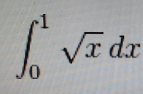
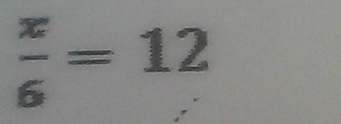
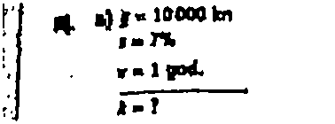
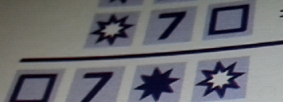

When user tries to recongize printed mathematic expressions, several rules have to be followed:
1. User has to take photo of PRINTED maths, not handwriting;
2. User needs to keep the expression(s) upright and avoid any inclination;
3. Background has to be as unique as possible. Background is the photo snapshot of the selected range (inside the green rectangle) excluding the expressions. Light shade in the background is acceptable. However, distatinct colr change will be looked on as a stroke of math expression(s). Also, background must be in lighter color than expression(s), e.g. background is white and expression(s) are black;
4. Photo taken has to be clear. If user is not sure if it is clear or not, click the "Verify" button to see the segmentated image.
The following picture was taken using right approach.

The following image is the segmentated above picture. User can see it is very clear.
The following picture was not taken using right approach. The characters are too small and the user may shake hand when took it. So the segmentated picture is very unclear.
.bmp)
.bmp)
The following picture was not taken using right approach. The characters are not very clear and there are some noise points in the background.

.bmp)
The following picture was not taken using right approach. First the expression was written by hand; Second it is not upright.
.bmp)
.bmp)
The following picture was not taken using right approach. First the expression was written by hand; Second it is not upright; Third the background is not unique. We can see many vertical lines in it.
.bmp)
.bmp)
The following picture was not taken using right approach. Everything is fine except it is a handwriting expression. User should choose handwriting mode in our another app, named Smart Photographic Calculator, and directly write on the mobile to recognize. No photo is required to take. Otherwise, like x might be recognized as multiply, 2 might be recognized as z and the recognized expression is total wrong.
.bmp)
.bmp)
The following picture was not taken using right approach. The expressions are for children to learn maths. They are not formal math expressions. Note that this app can only support formal math expressions. Furthermore, the background is not unique.
.bmp)

What's this?!

.bmp)